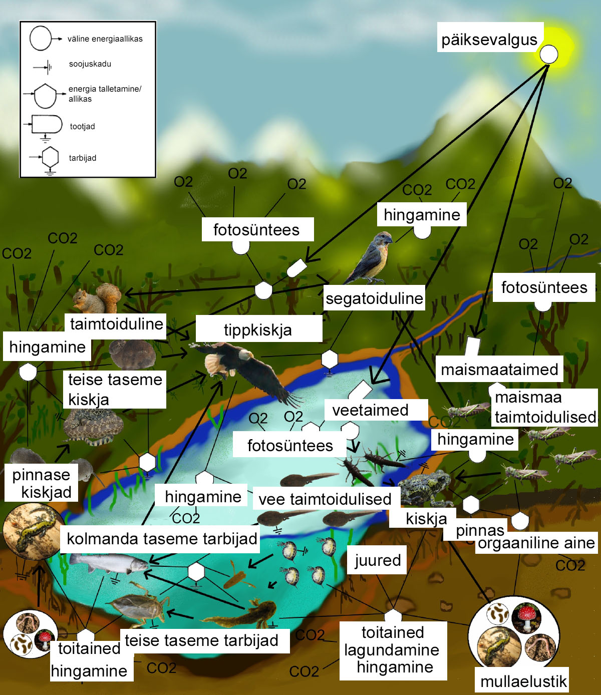

Selles lõigus kirjeldatakse aine ja energia ülekannet läbi ökosüsteemide eri komponentide. Aine ja energia läbivad ökosüsteeme erineval viisil. Energiavoog liigub edasi lineaarselt: Päikese poolt toodetakse lakkamatult energiat ning see siseneb toiduvõrgustikesse läbi fotosünteesi. Seejärel liigub energia tootjatelt (nt taimed) tarbijateni, kuni see on troofilistel tasemetel täielikult kasutatud. Ained aga liiguvad edasi tsükliliselt: aineid töödeldakse alati lagundajate poolt ümber.
Magevee ja maismaa toiduvõrgustik. Allikas: http://en.wikipedia.org/wiki/File:FoodWeb.jpg